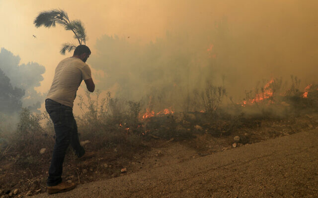
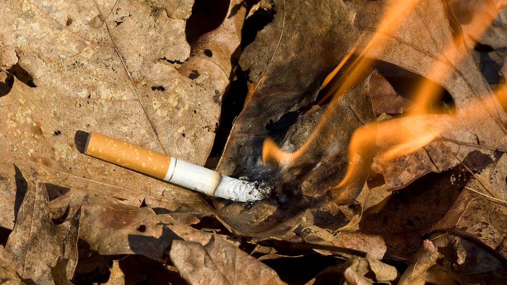
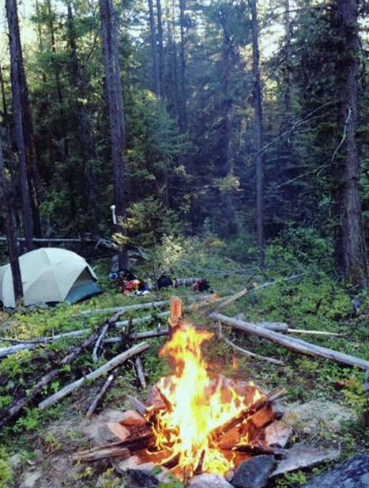
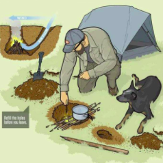
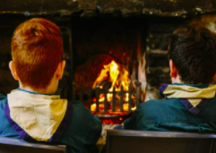
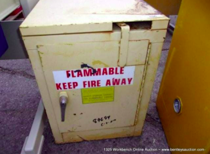
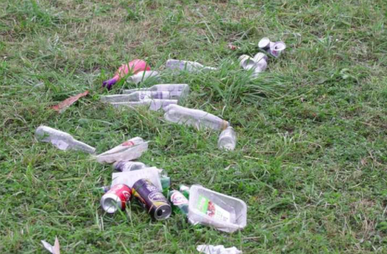
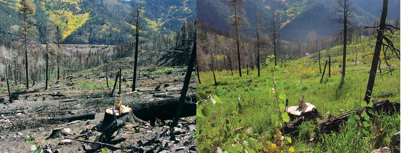
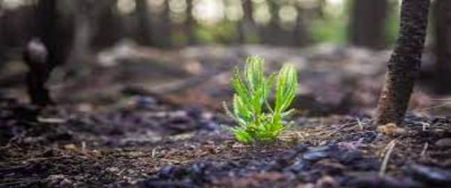
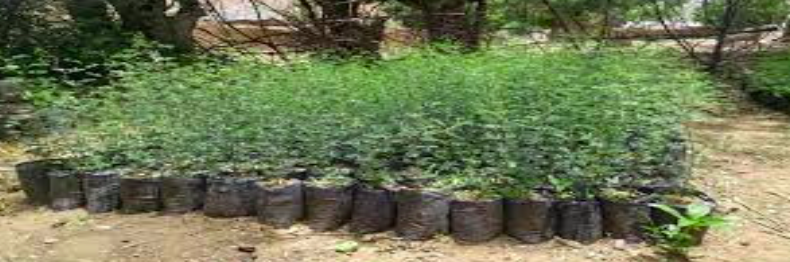

A man tries to extinguish a forest fire, at Qobayat village, in the northern Akkar province,
Lebanon, July 29, 2021.
Wildfires map and fatalities:
In recent weeks, the devastating effects of wildfires, which have killed more than 100 people and rendered
thousands homeless, have been dominating headlines around the world.
Several countries have reported their worst fires in decades, including hundreds of deadly fires across the
Mediterranean. In Algeria, at least 90 people have been killed.
Mediterranean Wildfires
A heat wave across southern Europe, fed by hot air from Africa, has led to wildfires across the
region.
Hundreds of fires have raged from Algeria to Jerusalem over the past month.
Source NASA FIRMS, Local media | Last updated August 18, 2021 .
Reasons:
Lightning

Cigarettes

Campfires
Power Lines
Awareness and how to prevent wildfires
A- Preparedness and awareness of forest fires:
If you see a FIRE
Stay calm
Call 125 and report the following information:
Your name
Phone number
Exact address and type of fire
B- Preventive measures for forest hikers or owners of agricultural land :

1-Dig a small hole away from the weeds or twigs used to light the fire for grilling.
When finished, it should be filled with dirt and water is poured over it to cool it.

2-Watching the fire constantly, especially when the air is present, which causes
sparks to fly and spread.

3-Keep flammable materials away from the place of fire.

4-Collecting waste in bags to put it in rubbish bins, especially glass.
5-Put a hand-held extinguisher near the fire place for use in emergency cases.
Wherever you are, and when you hear the alarm of firefighting vehicles or ambulances, allow them to pass.
Restoration & Regrowth After Wildfire
During high-intensity forest fires, soil temperatures can top 500 degrees Celsius (932 degrees Fahrenheit),
which leads to the loss of soil nutrients .So the forest soils recover from disturbances slowly over many
years — up to 80 years following a wildfire .
But Long-lasting declines in soil nutrients such as nitrate, phosphorus and organic carbon could have flow-on
effects on the functional roles soils have.
Then, and the harrowing aftermath of a major wildfire, it may be difficult to appreciate the restorative
power in the fire itself. Especially when nothing remains to hold the land in place .

There are many ways to help the forests and start Restoration & Regrowth After Wildfire:
No External
Simple , sometimes having no external intervention is what nature requires after a
wildfire.
Rain
When rain comes breathes life back into the remaining landscape, allolightning. The other half are
human-caused — frequently started by power lines, cigarettes, cars, camp fires or arson.wing new
vegetation to grow in the charred areas. Seeds stored in the forest floor begin to germinate. Some
trees begin to sprout branches from basal buds of dead trees.

External
Help plants regrow after a fire. Communities may bring in plants from local nurseries or scatter
seeds on the landscape after the fire.

Planting
Start planting trees immediately, and instead of trees that dominate the region, plant different
kinds of saplings.
Protect & Observation
And the most important is that it must be protected and under observation(the burnt land).